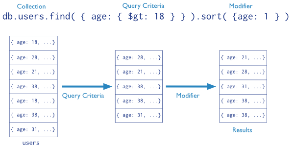
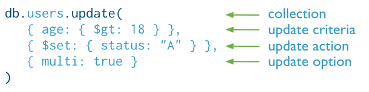

Node.js Workshop
Session 2 - 04/03/2016
http://bit.ly/nodejs-ws-2
What is NoSQL?
NoSQL encompasses a wide variety of different database technologies that were developed in response to the demands presented in building modern applications:
- Large volumes of rapidly changing structured, semi-structured, and unstructured data
- Agile sprints, quick schema iteration, and frequent code pushes
- Object-oriented programming that is easy to use and flexible
- Geographically distributed scale-out architecture instead of expensive, monolithic architecture
Scaling a Relational DB
To support more concurrent users and store more data, relational databases require a bigger and more expensive server with more CPUs, memory, and disk storage.
Scaling a NoSQL DB
As the number of concurrent users grows, simply add additional low-cost, commodity servers to your cluster.
Who uses NoSQL?
Some familiar names
- Hadoop big data, high scalability, Java.
- Elasticsearch document store, high performance indexing, Java.
- MongoDB document store, high scalability, C++.
- Redis key value store, Erlang.
- Neo4J graph database, JAVA.
- and so on...
MongoDB: Documents
MongoDB stores data in the form of documents, which are JSON-like field and value pairs.

MongoDB: Collections
MongoDB stores all documents in collections.

MongoDB: Read Query
In MongoDB a query targets a specific collection of documents. Queries specify criteria, or conditions, that identify the documents.
MongoDB: Data modification
Data modification refers to operations that create, update, or delete data. In MongoDB, these operations modify the data of a single collection.

MongoDB: Data modification
Data modification refers to operations that create, update, or delete data. In MongoDB, these operations modify the data of a single collection.
MongoDB: Schema creation
Wait, but what about releationships? Embed. Think about how you use your data.
Read more about itMongoDB scalability: Replication
A replica set is a group of mongod instances that maintain the same data set.

MongoDB scalability: Sharding
Sharding is a method for storing data across multiple machines.

Fire up your machines!
If you couldn't attend the Session 1 Workshop and didn't follow the slides, please clone the code from this repo and install the dependencies:
git clone https://github.com/martip-sainsburys/nodejs-project.git
cd nodejs-project
npm install
npm start
MongoDB installation
If you're in a Mac and you have homebrew installed:
brew install mongodb
...
mongod --config /usr/local/etc/mongod.conf
Otherwise find your installer
Mongoose ODM
Mongoose provides a straight-forward, schema-based solution to model your application data. It includes built-in type casting, validation, query building, business logic hooks and more, out of the box.
npm i mongoose --save
npm i body-parser --save
Mongoose ODM
Connecting to MongoDB
//app.js
'use strict';
const config = require('./config'),
express = require('express'),
app = express(),
bodyParser = require('body-parser'),
mongoose = require('mongoose'),
db = mongoose.connection;
mongoose.connect('mongodb://localhost/nws');
db.on('error', (err) => console.error('Connection error: ', err));
db.once('open', () => console.log('Connected to MongoDB'));
app.use(bodyParser.urlencoded({ extended: true }));
app.use(bodyParser.json());
...
Creating a new model
//models/pr.js
const mongoose = require('mongoose'),
Schema = mongoose.Schema;
const PRSchema = new Schema({
gh_id : Number,
url : String,
state : String,
title : String,
author : Schema.Types.Mixed,
body : String,
created_at: Date,
updated_at: Date,
closed_at : Date,
merged_at : Date,
marged : Boolean,
commits : Number,
links : []
});
module.exports = mongoose.model('PR', PRSchema);
Creating our API
Let's refactor our app a little bit:
routes
├── api
│ ├── index.js
│ └── pr.js
└── webserver.js
Creating our API
Now we can simplify our app.js file
'use strict';
const config = require('./config'),
express = require('express'),
app = express(),
bodyParser = require('body-parser'),
mongoose = require('mongoose'),
db = mongoose.connection,
webserver = require('./routes/webserver'),
api = require('./routes/api');
mongoose.connect('mongodb://localhost/nws');
db.on('error', (err) => console.error('Connection error: ', err));
db.once('open', () => console.log('Connected to MongoDB'));
app.use(bodyParser.urlencoded({ extended: true }));
app.use(bodyParser.json());
app.use(express.static('public'));
app.set('view engine', 'ejs');
app.use('/', webserver());
app.use('/api', api());
app.listen(config.PORT, () => {
console.log(`Server listening on localhost:${config.PORT}`);
});
Creating our API
The routes/webserver.js holds the same code as before:
//routes/webserver.js
'use strict';
const express = require('express'),
router = express.Router();
module.exports = () => {
router.get('/', (req, res, next) => {
res.render('index', {message: 'Hello World'});
});
return router;
};
Creating our API
The api/index.js is going to be the hub for all our API endpoints.
//routes/api/index.js
'use strict';
const express = require('express'),
router = express.Router(),
pr = require('./pr');
module.exports = () => {
router.use('/pr', pr());
return router;
};
Creating our API
We want to create a RESTful CRUD API for our PRs.
| Route | HTTP Verb | Description |
|---|---|---|
| /api/pr | GET | Get all PRs |
| /api/pr | POST | Create a PR |
| /api/pr/:pr_id | GET | Get a single PR |
| /api/pr/:pr_id | PUT | Update a single PR |
| /api/pr/:pr_id | DELETE | Delete a single PR |
Creating our API
The api/pr.js file is going to define all the methods of our API
//routes/api/pr.js
'use strict';
const express = require('express'),
router = express.Router(),
PR = require('../../models/pr');
module.exports = () => {
router
.get('/', (req, res, next) => {
//Get all PRs
PR.find((err, prs) => {
if (err) {
return res.status(500).json({error: err});
}
res.json(prs);
});
})
.post('/', (req, res, next) => {
//Create new PR
let pr = new PR(req.body.pr);
pr.save((err) => {
if (err) {
return res.status(500).json({error: err});
}
res.status(201).json({message: 'PR created!'});
});
});
return router;
};
Exercise 1: Using Postman
Time to test it! We're going to use Postman to test our API.
Postman is a Chrome App created using web technologies and allows you to test RESTful APIs setting headers and payload easily.
Exercise 1: Using Postman
You can send custom JSON data on the raw option. Don't forget the Content-Type: application/json header!
Exercise 1: Using Postman
Test the GET (retrieve all entries) and POST (create new entry) methods of our API using this JSON:
{"pr":
{
"gh_id" : 1234,
"url" : "http://some.url",
"state" : "open",
"title" : "My PR",
"author" : {
"login": "martip-sainsburys",
"id": 1234
},
"body" : "This is the body of the PR",
"created_at": "2015-05-05T23:40:27Z",
"updated_at": "2015-05-05T23:40:27Z",
"closed_at" : null,
"merged_at" : null,
"marged" : false,
"commits" : 1,
"links" : []
}
}
Exercise 2: Complete the API
We have 2 of the 5 methods we want, create the remaining:
| Route | HTTP Verb | Description |
|---|---|---|
| /api/pr/:pr_id | GET | Get a single PR |
| /api/pr/:pr_id | PUT | Update a single PR |
| /api/pr/:pr_id | DELETE | Delete a single PR |
//hint: you can get url parameters like this
.get('/:pr_id', (req, res, next) => {
let pr_id = req.params.pr_id;
...
What we learned today
- NoSQL: What is it, what purpose does it serve.
- MongoDB: What it is, how it works.
- Mongoose: How to create a model and use it.
- API Creation: Define api routes and methods for a RESTful API.
- Postman: How to use Postman to test your APIs
Thank you!
Check out the repo https://github.com/martip-sainsburys/nodejs-workshop.
What else do you want to learn?